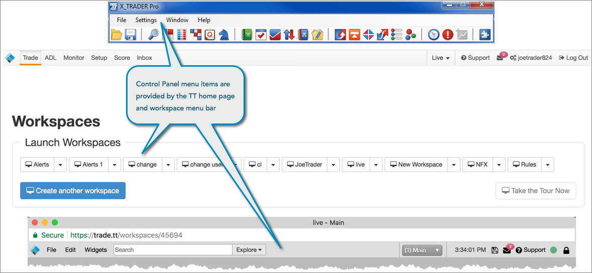

Functionality in the X_TRADER control panel is provided by the TT home page and TT workspace menu bar.

The X_TRADER control gave you access to the following functionality:
The same workspace management capabilities in X_TRADER are also provided on TT. Workspaces are created and managed using the TT home page, which is the landing page after you log in to the platform.
The basic difference between creating a workspace in X_TRADER and TT is that you add trading windows to your desktop first in X_TRADER, then save your the windows configuration on your desktop as a new "workspace". On TT, you create a blank workspace first, then add trading "widgets" to the workspace.
After you create and open a workspace, you can add trading "widgets" to the workspace using the Widgets menu on the workspace menu bar. An icon for each widget is displayed in the menu.
Many of the same global "properties" in X_TRADER are provided in the Preferences screen on TT.

Customer defaults are created as "order tag defaults" and given a profile name by administrators in Setup. In your TT workspace, you can select and customize these default account and order settings using the Order Profiles widget in your TT workspace.

On TT, your accounts are set up for the markets you want to trade. Simply submit orders using the accounts connected to those markets.
You can open the TT Setup application from within your workspace to view which markets and products you have access to, check margin values per contract, and view your daily credit limit and position limits assigned to your accounts and username.

TT Order Types are provided in the order types selector in order entry widgets on TT. When you select a TT Order Type, you can save your settings as a "template", which serves as your order defaults for submitting synthetic orders.

You can request that different brokers share their TT accounts and market access with your company using the Setup application. For example, a broker can share an omnibus account with your company, then your administrator would add order routing sub-accounts under the shared account with connections to the requested market. But currently a single order cannot be split and routed among multiple accounts.
By default, TT provides the same functionality as X_TRADER ASP, so you do not need to manually select TT Gateways that are routing orders to specific brokers, and no manual TT Gateway installations and configurations are necessary to access a market. On TT, you can route orders to different brokers and markets using parent accounts and child sub-accounts configured in Setup.
If you wanted access to a different customer environment on X_TRADER, you had to enter the new multicast IP address in Guardian and manually restart your Guardian and TTM services on your client workstation. For trading in the Simulation environment, you had to ensure that the minimum client applications required for the additional TT SIM software package were installed on your machine.
On TT, you can easily switch between Live and Simulation trading environments from your TT workspace or home page without needing to log out of one environment to log in to the other.

The TT help library and Technical Support links can be accessed directly from the workspace menu bar or home page. In addition, you can click "?" on each widget's title bar to open context-sensitive help for that widget similar to using "F1" in X_TRADER.
Tip: If you need to report an issue, you can open an incident report directly from your open workspace.

Note: As needed, the TT home page and workspace will display a "Hello Bar" to inform you of events that may impact trading or your environment. The Hello Bar messages essentially replace the Customer Advisories you received on the X_TRADER platform.